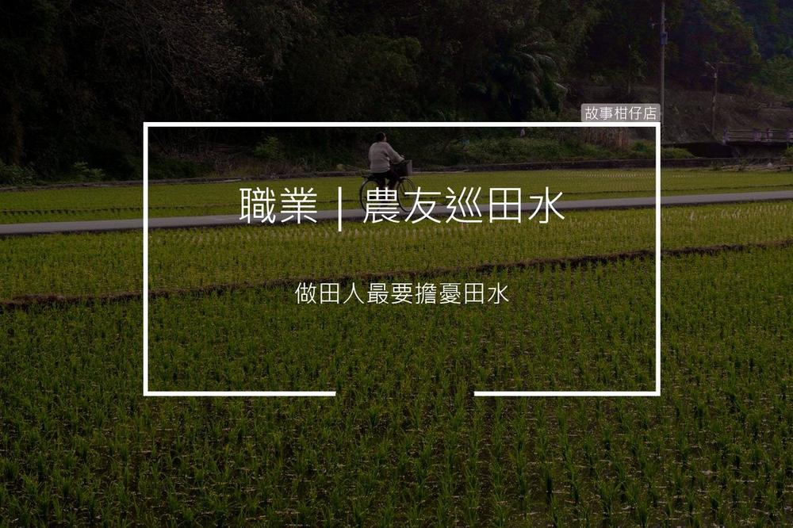

農友巡田水
2018-05-08

傳統農業社會中，水田多仰賴溝渠中的水灌溉，巡田水便是指農人在灌溉期到農田巡視，檢查自己農田的進水、排水狀況。
〈農友巡田水〉
「我的金孫！那欸頭殼又腫一包，妳這做阿母的，是怎麼顧的！」
「囝仔就愛玩，我也沒辦法阿。」
「隔壁天仔他某齁！妳就要卡學咧，攏袂對她婆婆應嘴應舌啦！」
一陣又一陣的吵鬧聲，從後方廚房傳來。家和默默踱出房門，只見無人的客廳裡，電視機不落人後地放送著八點檔。
電視裡的劇碼，厝裡不是天天在上演嗎。他上前拿起遙控，無半點留戀地切掉。
抄起夾克，揣在手裡正要推門，背後卻冷不防傳來妻子的聲音。
「這麼晚了你去哪？」妻子兩眼直盯著他，聲音冷得像暗時的田水。
「去巡田。」
「巡啥田水，每次你母對我大小聲，你就說要巡田！」
家和皺緊眉頭，半聲不吭地跨過門檻，牽了鐵馬，匆匆遁入惦惦的暗暝。
怎麼不用巡，做田人最要擔憂田水，少了怕乾涸，多了又怕淹，尤其作風颱，一個不小心掃到風尾，整年的心血就去了了，誰跟妳不用巡。
家和踩著鐵馬，沿路蛙鳴高高低低伴他前行。才來到田邊，便望見一個熟悉的身影，蹲坐在田梗上抽著煙。
停妥鐵馬，家和走上前拍了拍天仔的肩膀。「安怎，怎麼躲在這。」
「唉，還不是厝裡作風颱。」天仔嘆口氣，遞了根煙給家和。
家和深吸一口，朝著天空吐出長長的煙霧，溝仔裡的水咕嚕咕嚕地流著，一點一滴漫入幽靜農田。
每個黃昏的魔幻時刻，
故事柑仔店，邀您一同
聽聽他們的聲音。